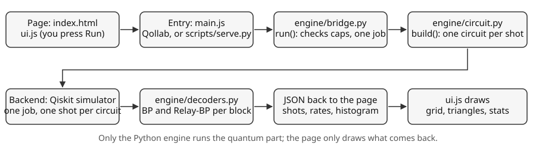

Appendix
Run it yourself: install, check, serve
Install two packages, run the self-check in about half a minute, and start the simulator on your own machine with the same engine that runs on Qollab.
Install and check
You need Python 3 and the two packages in requirements.txt: Qiskit 2.0 or newer, and numpy. From the repository root:
pip install -r requirements.txt
python -m engine.selfcheckThe self-check is a script of assertions that fails loudly if the engine is wrong. It checks the encoder (stabilizers and logical operators), that Relay-BP corrects every single fault, that p = 0 lights nothing and gives only 00 and 11 for a Bell pair, that bit flips light mostly Z checks, that the SI1000 logical error grows with p, that the limit matches brute force over all 217 errors of one round, and that Relay-BP beats BP and sits near the limit. On the machine used for this page it took about 30 seconds and printed ok for each of its five checks. It also reports that plain BP miscorrects 4 of the 37 single faults, and a decoder-only comparison at depolarizing p = 0.06: BP 0.239, Relay-BP 0.16575, limit 0.163. Your runtime depends on your processor.
Run the simulator locally
python scripts/serve.pyThen open http://localhost:8000. An optional argument sets another port, for example python scripts/serve.py 8080. The script serves the same page and swaps main.js for a short shim that sends every Run to a local /run endpoint, where native Python calls engine.bridge.run on Qiskit’s BasicSimulator. Opening index.html directly from disk does not work, because engine.bridge only exists inside Qollab or behind this server.
The documentation you are reading is static. Serve the repository root with any file server, for example python -m http.server, and open src/docs/index.html.
The same engine on Qollab
On Qollab, main.js imports the Python module engine.bridge and passes it the backend you picked. Press Run with the built-in Qiskit simulator. The engine is the same code and the same simulator as in local mode; local mode is only faster, because native Python replaces the browser. The two decoders are written in plain numpy for that reason: the official relay-bp package is Rust and cannot be installed in the browser. IonQ backends are not supported (see chapter 12).
Project layout
index.html, main.js Qollab entry points (must stay at the root)
requirements.txt qiskit, numpy
engine/ Python: steane, noise, circuit, decoders, bridge
src/js/ ui.js, audio.js (app); steane-patterns.js (docs)
src/css/ tokens.css, main.css (app); docs.css (docs)
src/img/ diagrams (SVG)
src/fonts/ Geist, Instrument Serif and their licences
src/docs/ this documentation (static HTML)
scripts/ serve.py (local mode), benchmark.py, make_diagrams.pyLicence
Steane Patterns is released under the MIT licence, copyright 2026 Nixon Lizcano. The full text is in LICENSE at the repository root.

Sources
- A. Javadi-Abhari et al. (2024). Quantum computing with Qiskit. arXiv:2405.08810. arxiv.org/abs/2405.08810
Supports: Qiskit. - Qiskit documentation.
BasicSimulator, which limits statevector simulation to 24 qubits. quantum.cloud.ibm.com/docs/en/api/qiskit/qiskit.providers.basic_provider.BasicSimulator
Supports: the simulator used for every run.